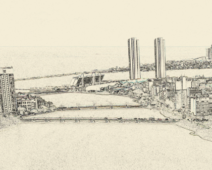

<ng-container *ngVar="(communitiesRD$ | async) as communitiesRD">
  <div *ngIf="communitiesRD?.hasSucceeded ">

    <h2>
      {{'home.top-level-communities.head' | translate}}
    </h2>
    <p class="lead">{{'home.top-level-communities.help' | translate}}</p>

    <div class="d-flex flex-wrap align-items-center justify-content-center">
      <a href="communities/2ee8b9bc-f2fe-4874-a307-5e99aec70079" class="collection-link">
        
        <p class="text-center" style="font-size: larger;">Sistemas Urbanísticos</p>
      </a>
    </div>

    <!-- <ds-viewable-collection [config]="config" [sortConfig]="sortConfig" [objects]="communitiesRD$ | async"
      [hideGear]="true">
    </ds-viewable-collection> -->
  </div>
  <ds-error *ngIf="communitiesRD?.hasFailed " message="{{'error.top-level-communities' | translate}}"></ds-error>
  <ds-loading *ngIf="communitiesRD?.isLoading " message="{{'loading.top-level-communities' | translate}}"></ds-loading>
</ng-container>